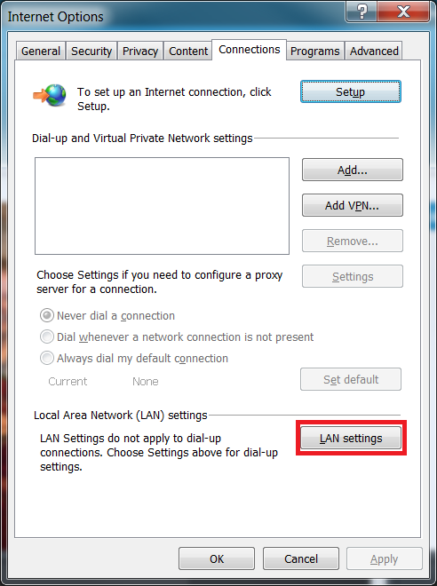
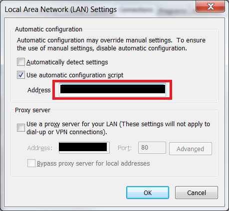

For those of you who need to use NPM at work, you may have found that some things don’t work out of the box. For example, your work’s corporate proxy to cause a few issues. I also had some issues with particular packages not working in the default install location.
NPM has a configuration file for you to set the proxy rather than just using the HTTP_PROXY and HTTPS_PROXY environment variables. It’s worth pointing out that the NPM config file is unique to each user. So make sure that you run the following commands as the user you will be using NPM as. Within command prompt enter the following:
npm config set http-proxy=http://proxy.company.com:80
npm config set https-proxy=http://proxy.company.com:80
If you don’t know what values to enter for your proxy settings, you may be able to find the values you need in the pac file within Internet options (via IE or control panel), providing that it has been set up by your network administrator.
Connections -> LAN Settings -> Address
Within the pac file you should be able to find your proxy settings.


In order for global packages to run (installed with the -g flag), you also need to add the NPM install location to your path variable. By default this is C:\Users\username\AppData\Roaming\npm After that you should be able to download packages and install them globally.
I had issues getting some npm packages to work when installed globally in my user directory, specifically things like angular-cli, for creating Angular 2 applications. In order to get angular-cli working I changed the default install location to C:\npm. This can be done with the following command:
npm config set prefix=C:\npm
Make sure that the folder exists. You will also need to add C:\npm to your path variable so that after you have installed a global package, Windows will pick up the .bat file.